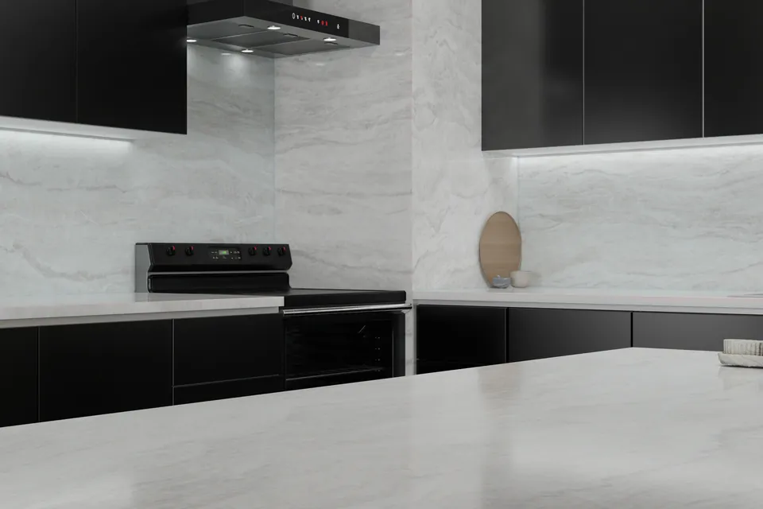
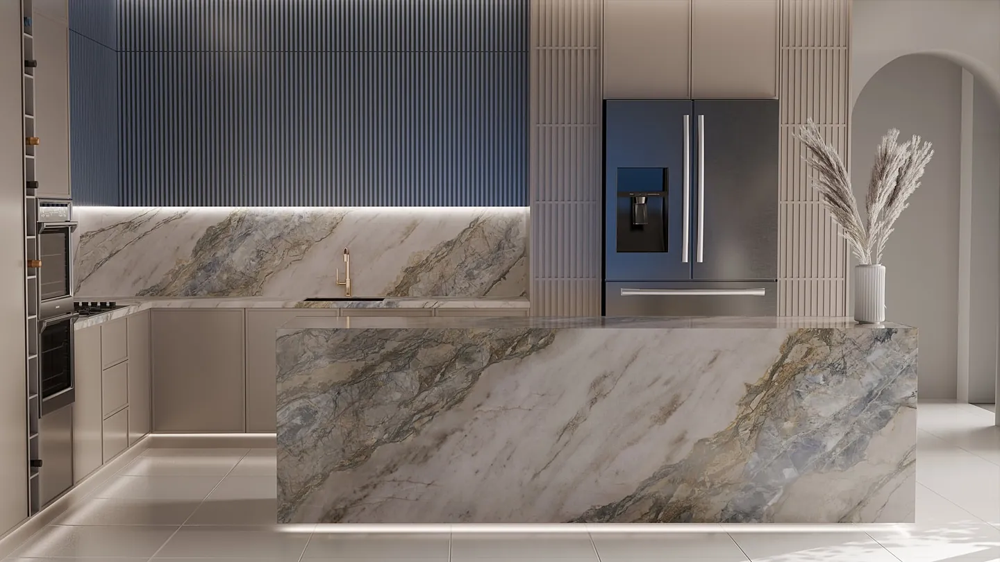

BEKAMAR / KUVARS YÜZEYLER
Doğal dokular,
çağdaş yorumlar.
Kuvars esaslı kompoze yüzeylerin renk ve desen çeşitliliğini keşfedin. Calisco ve Çimstone koleksiyonları, farklı iç mekân tasarımlarına kendi karakterini taşır.
MARKALARI KEŞFEDİN ↓01 — 02
CALISCO / KUVARS YÜZEY01 / RENK VE DESEN ÇEŞİTLİLİĞİ
CALISCO
Calisco kuvars yüzeyleri, doğal taşlardan ilham alan desenleri çağdaş renk ve doku yorumlarıyla buluşturur. Açık ve koyu tonlardan belirgin damarlı görünümlere uzanan koleksiyon, mutfak ve banyo gibi iç mekânlarda farklı tasarım tercihlerine eşlik eder. Ürün seçenekleri ve uygun kullanım koşulları modele göre değerlendirilmelidir.
CALISCO KOLEKSİYONUNU KEŞFET ↗
ÇİMSTONE / KUVARS YÜZEY02 / KUVARS ESASLI KOMPOZE YÜZEY
ÇİMSTONE
Çimstone kuvars esaslı kompoze yüzeyleri; farklı renkler, desenler ve yüzey görünümleriyle mutfak ve banyo tezgâhlarından iç mekân uygulamalarına uzanan seçenekler sunar. Doğal taş görünümünden yalın ve çağdaş ifadelere kadar uzanan koleksiyon, farklı tasarım dillerine uyum sağlar. Görünüm ve teknik özellikler seçilen ürüne göre değişebilir.
ÇİMSTONE KOLEKSİYONUNU KEŞFET ↗KOLEKSİYONLARI YAKINDAN TANIYIN
Projenize uygun yüzeyi
birlikte keşfedelim.